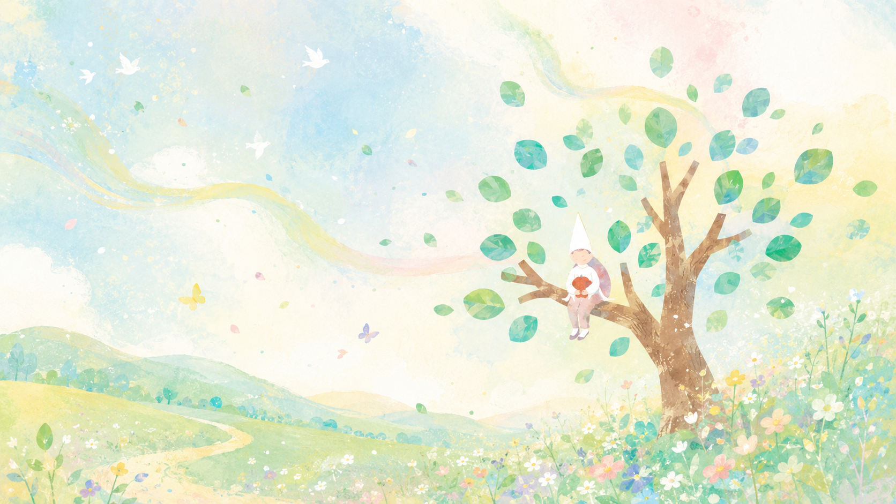
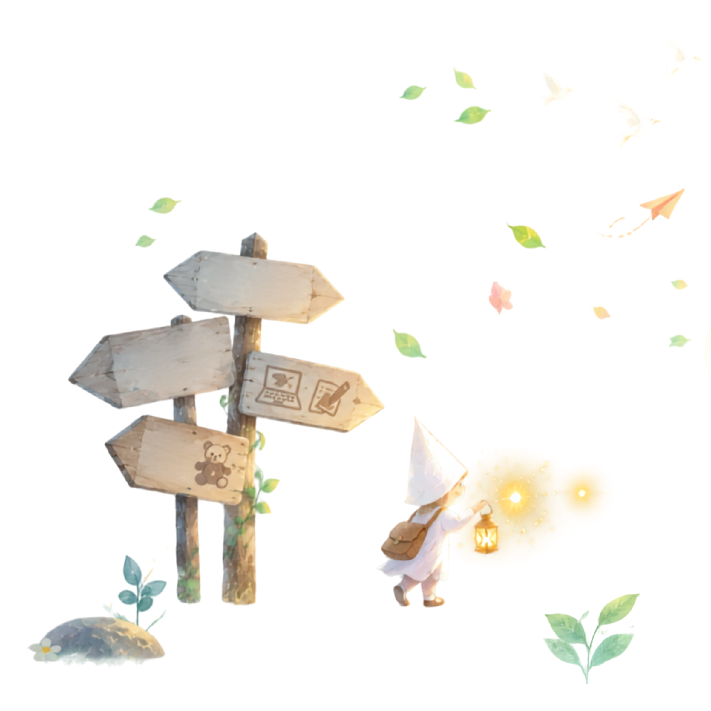

エホンリウム
エホンリウム
エホンリウム
エホンリウム

価値観カードと絵本づくりで、
自分らしい起業の軸を見つける。

子どもとの時間は、大切にしたい。でも、自分の人生や仕事も大切にしたい。
わたしには何ができるんだろう。自分らしさや強みを、言葉にできない。一から何かをつくる自信がない。

仕事を考える前に、まずは
「わたし」を知ることから始めてみませんか。

「エホンリウム」は、絵本（EHON）と育む場所を表す「arium」から生まれた名前です。
価値観カードと対話を通して、大切にしていることや、これまでの経験を見つめ、それを一冊の絵本にします。
大切にしたいことを見つける
これからの生き方を考える
物語を目に見える形で残す
体験を小さな仕事へ育てていく

カードを選びながら話すことで、大切にしていることが見えてきます。
当たり前だと思っていた経験の中に、意味や強みを見つけます。
迷ったときに何度でも戻れる、自分だけの一冊です。
エホンリウムガイドとして、体験会を届けられます。


2時間のオンライン体験会。価値観カードを選び、対話しながら、大切にしていることを見つけます。
最後には、その言葉が自分だけの絵本になります。
| 所要時間 | 2時間 |
|---|---|
| 開催形式 | オンライン |
| 参加費 | 3,000円（税込） |
| 持ち帰れるもの | オリジナル絵本PDF |
| 事前準備 | 特になし・PC推奨 |

想いを言葉にできなかった方が、短く大切な言葉にまとめられました。
「心が楽になりました」自分らしさが分からなかった方が、自分の中にある価値を認められました。
「初めて、わたしらしさを受け止められました」完成した絵本を発信したところ、新しいつながりが生まれました。
「自分の物語が、人との入口になりました」
自分だけの絵本が生まれたとき、「この時間を、誰かにも届けたい」と思った方へ。
エホンリウムガイド養成講座で、用意された仕組みを活用しながら自分のペースで体験会を開催できます。

自分が大切にしていることを知り、自分らしい一歩を踏み出す。
その経験を、次は誰かへ届けていく。受け取った人が、また歩き始める。
そんな小さな輪が、絵本を通して広がっていくことを願っています。

内田 琢也
バリュービジョン協会／価値観ファシリテーター
対話を通して、一人ひとりが大切にしている価値観を見つける機会を届けている。
秋月 偲希
EHON GOTO 代表／絵本作家
経験や活動の原点を聴き、その人らしい物語として絵本にする活動を行っている。
2つの専門性を掛け合わせて、エホンリウムは生まれました。

はい。何を始めたいか決まっていない方にもおすすめです。
大丈夫です。自分で絵を描く必要はありません。
オンライン開催なので、一緒の参加も可能です。
いいえ。体験会のみでも大丈夫です。
PDFに加え、有料で冊子化できます。
まずは、自分が何を大切に
しているのかを知ることから。
あなたの中にある物語を、
一冊の絵本にしてみませんか。
オンライン開催｜2時間・3,000円（税込）